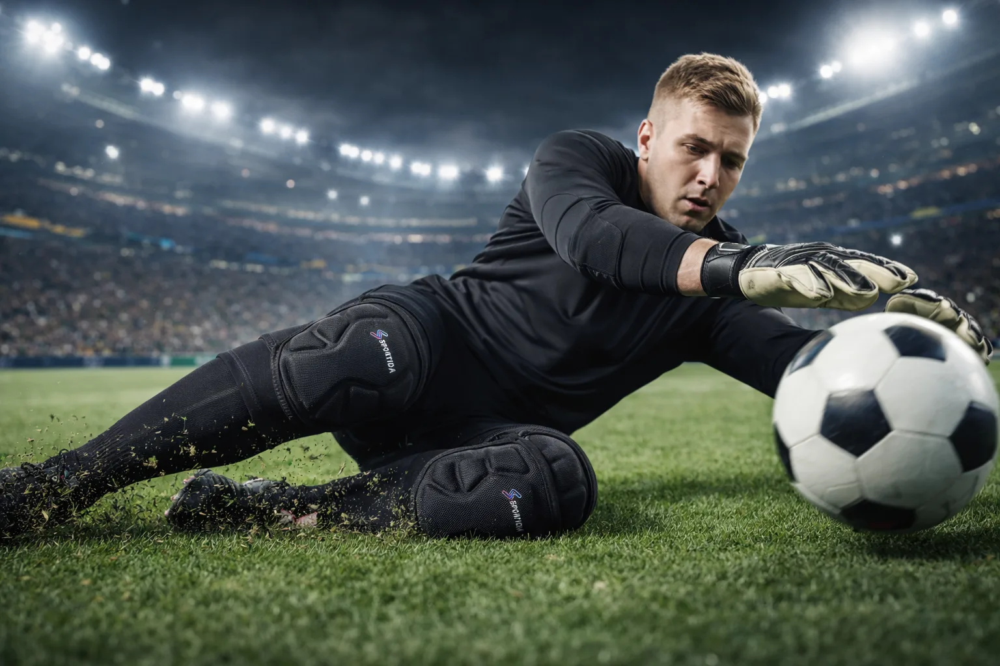
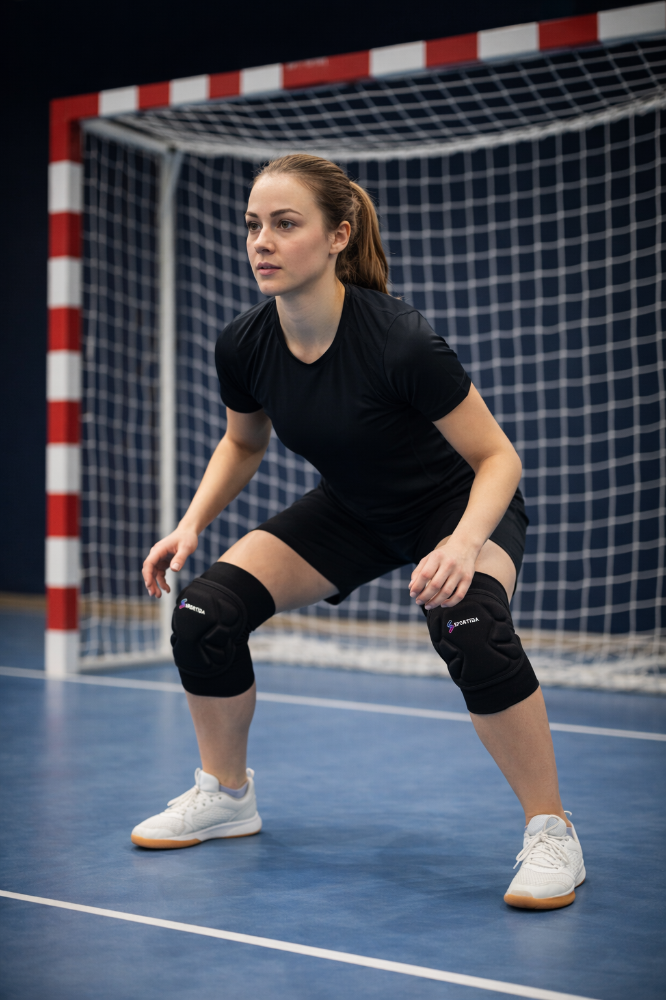
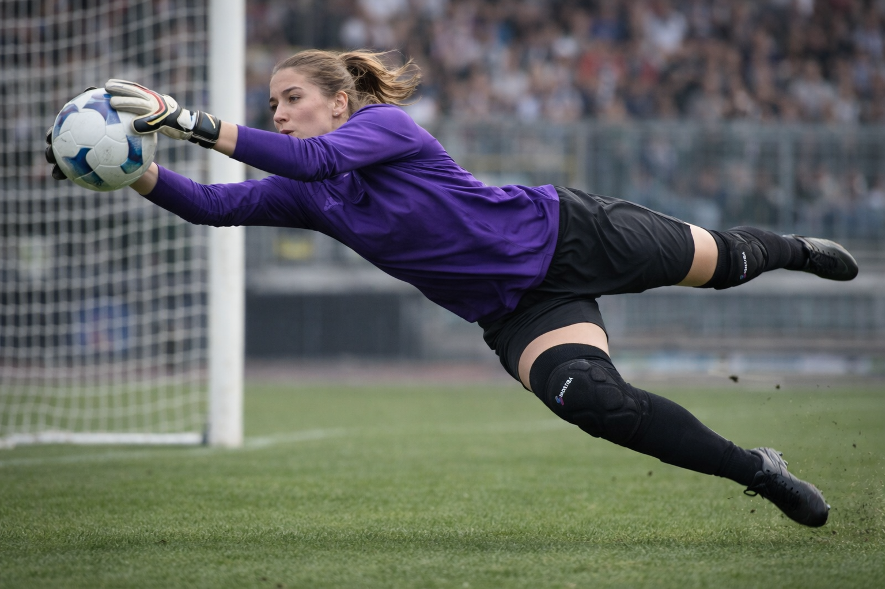

Bulky Knee Pads
Maximum padding, but can limit mobility during fast-paced soccer play.

Protection Where You Need It - Without Bulk
Compare protection, mobility and fit to find the right knee pads for training and match performance.
Every slide, dive and ground contact adds up over time.
Explore Sportida Knee PadsSoccer players use knee pads to manage repeated surface contact, especially during intense training blocks, defensive drills, and recovery movement. The biggest challenge is always the same: too much protection can feel slow, while too little protection leaves knees exposed.
This guide compares the main types of knee pads for soccer so you can choose a setup that protects your knees without limiting your movement quality.
Bulky models usually provide high-impact cushioning and broad coverage. They can be useful in high-contact environments, similar to traditional volleyball-style protection, but may feel restrictive for fast transitions.
Compression sleeves prioritize flexibility and a close fit. They are easy to move in, but many lightweight sleeves offer limited impact protection when sessions include repeated dives or hard-surface contact.
A balanced design combines targeted cushioning with natural mobility. This modern approach is built for players who need both impact support and speed, especially when training rhythm and movement quality matter.
Maximum padding, but can limit mobility during fast-paced soccer play.

Maximum flexibility, but limited protection during repeated ground contact.
Balanced protection and mobility designed for real soccer performance.
Protection Where You Need It - Without Bulk
| Type | Protection | Mobility | Best For |
|---|---|---|---|
| Bulky pads | High | Low to medium | Heavy-impact sessions and players who prioritize maximum cushioning |
| Compression sleeves | Low to medium | High | Light training and players who prioritize speed and flexibility |
| Balanced (Sportida) | Medium to high | High | Soccer players seeking protection and mobility in the same product |
Sportida S6764 uses segmented EVA padding to absorb contact while preserving natural knee movement. The ergonomic design follows real movement patterns, the compression fit helps the pads stay in place, and the overall feel stays lightweight through long sessions.
Protection Where You Need It - Without Bulk.
Explore Sportida Knee Pads

Knee protection is especially relevant for goalkeepers, sliding drills, and repeated movement work on turf and indoor courts. If you want position-specific guidance, visit our goalkeeper knee pads page and this full soccer knee protection guide.
For decision support on training context, also review Do Goalkeepers Need Knee Pads? and our broader overview of sliding sports protection.
Most players struggle choosing between bulky protection and lightweight comfort.
The right choice depends on how you train - and how often you hit the ground.
For players who need both protection and mobility, a balanced design offers the best overall performance.
Not every player uses them every day, but knee pads are useful for training sessions that include repeated floor contact, tackling drills, and higher-impact movement.
For many players, yes. They can reduce impact and friction stress, which helps maintain confidence and consistency in high-volume training.
The best option usually balances cushioning and mobility: enough protection for contact, enough flexibility for fast movement, and a fit that stays stable.